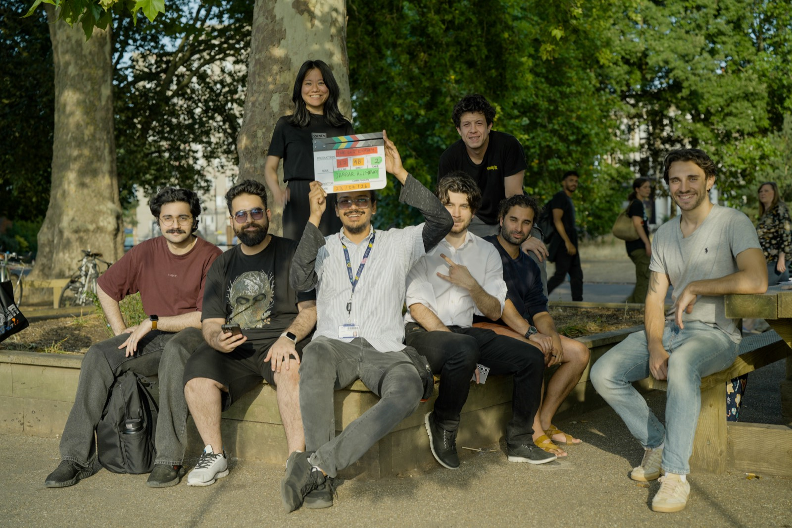

Reel 04 — Experience
Experience
5+ years of end-to-end content production across social, branded, and narrative work — plus the on-set crew credits and the roles I'm chasing next.
On Set
What I've actually done on a physical set, and what I'm available for next. Post-production is where my experience is strongest — the editing credits across these films and the Content page speak for themselves. This board is the on-set side: a film graduate breaking in, reliable, on time, and happy to start at the bottom of the call sheet — that's how you learn the rest.

My master's thesis film — awarded a distinction, with especially strong feedback on the cinematography and lighting.
Focus puller under DP Anand Singh, on an ARRI Alexa Mini. 3-day shoot — July 2026.
Zero-budget short for my professor during my bachelor's, shot on a Sony A6400 with a 35mm Sony 1.8 lens. 2-day shoot — May 2024.
Shot on a Sony A7 IV with 50mm and 24mm Sony GM f/1.4 lenses; lit with an Aputure 300X, a Nanlite Forza, a Ulanzi 100W COB, and RGB bar lights. Shot around March 2026.
Cut for pacing, bringing the story to life on a tight deadline — full edit turned around in 3 weeks.
Kept the set running to the call sheet and shot list — managing crew and actors, calling the slate.
3rd / 4th AD, Trainee AD · Production Runner, Floor Runner · Production Assistant (PA) · Director's Assistant / PA · Script Supervisor Trainee · Assistant Producer.
Camera Trainee, Camera Assistant · 2nd AC, 3rd AC · Data Wrangler · DIT Trainee, DIT Assistant.
Assistant Editor, Junior Editor · Post-Production Runner, Post-Production Assistant. 8 years cutting everything from content and ads to short films — this one isn't an entry point, it's where I'm strongest.
Owning a brand's content end to end — ideas, scripts, production, and post — for social and the internet at large.
Available now, full-time — entry level on set, proven on the edit.
Full synopses, crew credits, and stills for these live on the Films page.
Editing & Content Work
The paid, documented work — content creation and editing jobs, in reverse chronological order. If you're hiring for post-production, this is the track record; the Content page has the actual reel.
- Delivered 10M+ TikTok views for Pakistan's most-followed Islamabad-based influencer, driving significant channel growth.
- Managed the full production pipeline: scriptwriting, shot listing, storyboarding, on-set cinematography, and post-production editing.
- Produced consistent high-frequency content across TikTok, YouTube, and Instagram, aligned to platform-specific formats.
- Collaborated directly with talent to develop content strategy and maintain brand voice across all channels.
- Edited video content for the international launch campaign of Planet Champs, an animated series with global distribution.
- Produced environmental awareness video content in partnership with ELF, under tight deadlines and high production values.
- Worked under Haroon Rashid, creator of Burka Avenger, South Asia's first female superhero animated series.
- Led editing of long-form multimedia content — podcasts, interviews, and social media videos — for one of Pakistan's leading entertainment platforms.
- Enhanced storytelling and visual quality across multiple formats, improving content consistency and viewer engagement.
- Built and monetised multiple YouTube channels from scratch: 1M+ combined lifetime views, 20,000+ subscribers across channels.
- Handled every part independently — ideation, scripting, filming, editing, SEO, and community management.
- See the full channel breakdown on the Content page.
Education
- Dissertation: directing and producing an original short film, The Last Entry, as final major project.
Skills & Tools